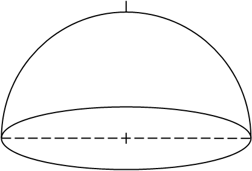
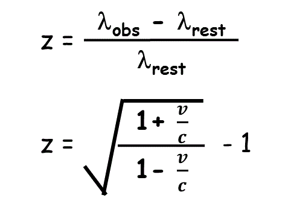

|
Complete this activity by 9am on Wednesday morning Please start it before you begin your travel to Green Bank and bring questions for discussion with others en route to GB |
Imaging that you are standing at the
center looking up. Label on this diagram the following:
|  |
Imaging that you are standing at the
center looking up. Label on this diagram the following:
|
| In extragalactic astronomy, we normally use "z" to indicate the observed redshift (or blue shift). Because distant galaxies are moving away from us at velocities that are a significant fraction of the speed of light, we need to adopt the relativistic doppler formula to relate z to a recessional velocity. This relation defaults to the simple doppler formula for v << c. See the equations to the right. g. At what frequency would be observe the HI in a galaxy at a distance of 70 Mpc from us? Hint: What is "Hubble's Law"? h. Over what frequency range would be expect to see HI line emission from the Milky Way? |
 |
| a. The diffraction limit of a telescope can be described by the cartoon to the right. What is the diffraction limit of a 305 meter diameter telescope at 21 cm? b. What is the beamwidth of the Arecibo L-band wide receiver system? c. Why aren't your answers to a. and b. the same? d. ALFALFA was undertaken in a drift-scan mode whereby the azimuth arm is held fixed (usually parked on the meridian) so that the sky drifts by as the Earth rotates. For a beamwidth of 3.5 arcmin (approximately that of one of the ALFA feed horns), how long does it take for a source to drift across one beam? |
|
b. Experiment with the differences in display tools for DR9 and DR12 of the SDSS image for this galaxy. What does "DR" mean?
c. How many HI line spectra (of UGC 987) obtained using the Arecibo telescope are available in the NED database?
e. Where does the redshift given in NED come from?
f. NED lists many different distances for this object. What do the different distances refer to?
Fact: During the ALFALFA team observations undertaken using the L-band wide receiver
at Arecibo in November 2013, the HI 21 cm line from the galaxy known to us as AGC 103425 was
detected at a heliocentric
recessional velocity of ~800 km/s. Use the links below
to investigate information about AGC 103425 in the public galaxy databases.
AGC 103425
004129.4+220231 10.3725 22.0419
DR9Navi
DR12Navi
DSS2blu.03
NED1.0
h. How large (linear diameter) is the galaxy? How does its size compare to that of the Milky Way? Be sure you keep track of how you obtained the answer.
i. Is the galaxy forming stars at the current epoch? How do you reach your conclusion?
Fact: During the ALFALFA team observations undertaken using the L-band wide receiver
at Arecibo in November 2015, the HI 21 cm line from the galaxy known to us as AGC 125245 was
detected at a heliocentric
recessional velocity of ~4300 km/s. Use the links below
to investigate information about AGC 125425 in public galaxy databases.
Be sure you know what databases these links take you to. They will be very useful later.
|
0.6 Communicating with ET Let us suppose that there are some extraterrestrial beings in the vicinity of the Solar System whose lifeform resembles that of a many pointed star and that they intercept a junk U.S. spacecraft containing a partly degraded plaque showing the illustration to the right. Where does this illustration come from and what is its intended meaning? |
 Click here for larger view. |
b. In the 2000 movie about the live tv coverage of the Apollo 11 Moon landing, what theme does the local Australian band play as the U.S. national anthem?
c. What radio astronomy pioneer discovered, through experiments conducted in Green Bank, that climbing bean plants produce more massive beans if they climb opposite to their natural twining direction?